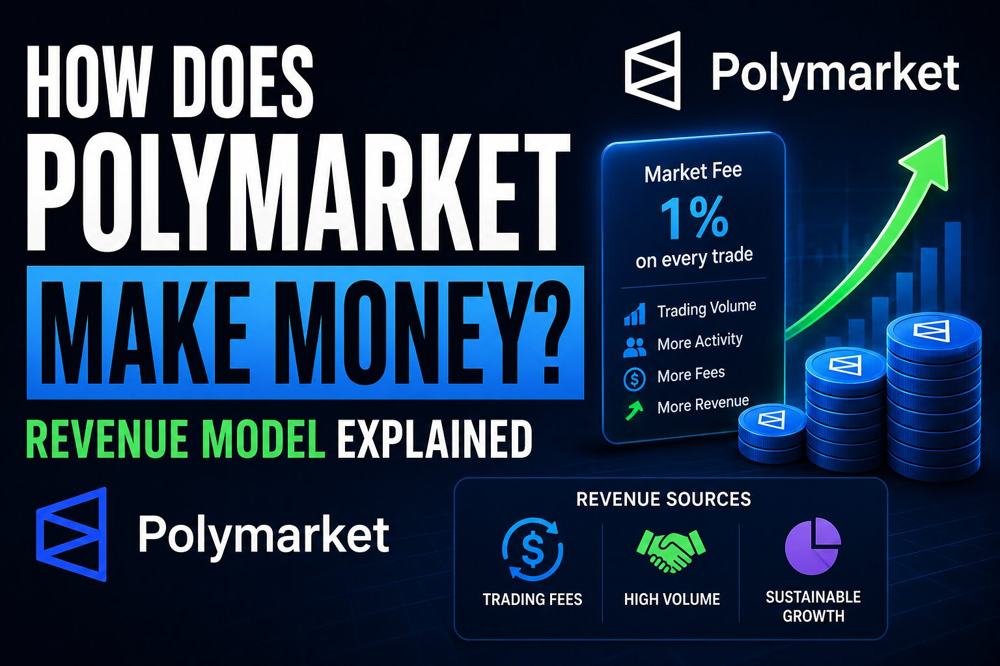

How Does Polymarket Make Money? The 2026 Revenue Model Explained

The short answer
Polymarket doesn't take the other side of your trade — when you buy YES shares, another trader is selling them to you, so the platform doesn't profit when you lose the way a sportsbook does. For most of its history it also charged no trading fees at all, running on venture funding while it built the deepest order books in the category. That changed through 2026. Today Polymarket earns money from three main sources: a new taker-fee schedule on trades, yield earned on the large pool of stablecoin collateral sitting inside open markets, and a fast-growing business licensing its real-time probability data to institutions.
For years, the honest answer was "it didn't"
Between its 2020 launch and the end of 2025, Polymarket charged nothing to trade — no fees on buys or sells, no deposit or withdrawal charges beyond whatever a third-party wallet or on-ramp added. Independent research pegged the company's revenue at close to zero through 2025 even as users traded billions of dollars in predictions. That wasn't an accident; free trading is one of the fastest ways to win liquidity and market share in a new category, and the company had the funding to sustain it while it built habit and volume it could monetize later.
Trading fees: the big change of 2026
The free era ended in January 2026, when Polymarket began phasing in taker fees — first on crypto markets, then select sports markets, then a broader rollout across categories by the end of March. A few rules define how the fee actually works. Only takers pay: place a limit order and wait for it to fill, and you're a maker paying nothing; click to execute immediately against an existing order, and you're a taker who pays a fee. The fee also scales with uncertainty, peaking when a contract trades near 50 cents and shrinking toward zero as the price approaches either extreme, since that's where the platform is doing the most work matching disagreement. Fee rates vary by category — crypto carries the highest rate, geopolitics and world-event markets currently carry none at all — and a portion of every fee collected flows back to market makers as a rebate to keep spreads tight.
Yield on the stablecoin float
This is the least visible revenue source and also one of the largest. Every open market on Polymarket is fully collateralized — for each pair of YES and NO shares, a dollar of stablecoin sits locked in a smart contract until the market resolves. Across thousands of simultaneously open markets, that adds up to a very large pool of idle dollars at any given moment. Idle dollars can earn yield: parked in short-term Treasuries or a similar low-risk instrument, that collateral can generate a modest annual return that, on a nine- or ten-figure balance, becomes a meaningful and durable revenue line — one that keeps producing income even during quiet stretches when trading volume, and therefore fee revenue, drops off. Polymarket tightened its control over this mechanism in 2026 by launching its own dollar-backed stablecoin, which keeps user balances inside its own ecosystem rather than a third-party token. Exactly how much of that yield the company keeps versus passes through to users hasn't been made public.
Selling data, not just hosting bets
The other major shift of the past two years is that Polymarket has positioned itself as a data company as much as a trading venue. A market's price is a live, crowd-funded probability estimate — when thousands of traders put real money on whether an election tips or a central bank moves, the resulting number is a signal that updates fast, often faster than traditional forecasting models. Institutions, newsrooms, and AI developers pay to access that signal through real-time feeds and historical data products, decoupling this revenue line from trading volume entirely: a firm can pay for the data without ever placing a bet. The scale of this bet became public through a major investment from the company that owns the New York Stock Exchange, which also became the exclusive institutional distributor of Polymarket's data feeds — a strong signal that outside investors see the information layer, not just the betting layer, as the long-term business.
The US relaunch adds a fourth stream
Polymarket had been blocked from serving US customers since 2022 following a CFTC enforcement action. That changed in 2025, when regulators dropped their investigations and Polymarket acquired an already CFTC-licensed derivatives exchange and clearinghouse, letting it relaunch a compliant, dollar-settled US product without going through years of approval from scratch. That US arm runs its own uniform taker-fee structure and gives Polymarket a second, more conventional exchange-style revenue line alongside the offshore, crypto-native platform — plus access to a large market that had been closed off entirely for three years.
What Polymarket doesn't make money from
Two things commonly get mistaken for platform revenue. The bid-ask spread on trades is captured by independent professional market makers who post liquidity — Polymarket actually pays part of its fee revenue back to them as rebates, making the spread a cost it subsidizes rather than a profit it collects. And market resolution runs through a separate decentralized oracle system where outside token holders, not Polymarket, earn the rewards for correctly verifying outcomes and post the bonds at risk in disputed cases. Both are essential infrastructure for the platform to function, but neither one puts money in Polymarket's pocket directly.
How this compares to Kalshi
Kalshi, Polymarket's main US-regulated rival, took the more conventional route from day one — charging an explicit per-contract fee on trades rather than running years of free access first. Both platforms earn interest on the idle cash sitting in open positions, and both have growing data and API businesses, but Kalshi built its fee income immediately while Polymarket leaned on growth-first free trading before adding fees in 2026. The two models are converging: Polymarket now charges fees closer to Kalshi's structure, while Kalshi continues to expand its own data licensing alongside its core trading fees.
Bottom line
Polymarket's business model no longer depends on any single trader losing money. It earns from a taker-fee schedule that scales with how contested a price is, from yield on the enormous pool of collateral parked inside open markets, and from a licensing business selling its real-time probability data to institutions — plus a newer, more conventional fee stream from its regulated US exchange. The platform that famously charged nothing has, in a little over a year, built a revenue model that looks like a hybrid of a modern financial exchange and a data vendor.
Disclaimer: This post is for informational purposes only and is not financial or investment advice. Polymarket has not published audited financials, and figures around yield capture and data-licensing revenue are based on public reporting and industry estimates rather than confirmed company disclosures. Fee schedules and revenue mechanisms can change — confirm current terms directly on polymarket.com.